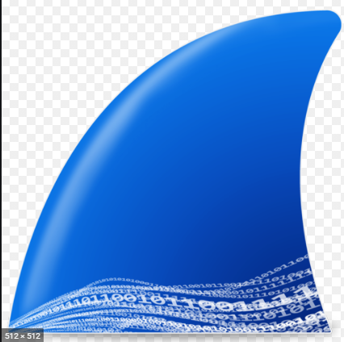
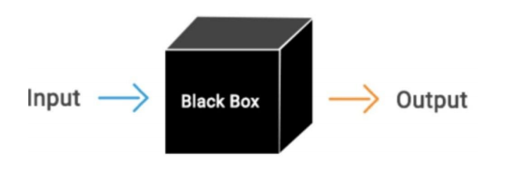

Quartus
Σκοπός της εργασίας ήταν η εξοικίωση με την γλώσσα Vhdl καθώς και η εκμάθηση του εργαλείου Quartus το
οποίο δίνει στον χρήστη την δυνατότητα να κατασκευάσει λογικές πύλες και κυκλώματα, παρέχοντας ταυτόχρονα
πολλές επιπρόσθετες δυνατότητες όπως real time τρέξιμο των κυκλωμάτων με πολλά διαφορετικά δεδομένα εισόδου,
σχήματα με την τελική μορφή των κυκλωμάτων και πολλά άλλα. Μετά την ολοκλήρωση της εργασίας απέκτησα τις
απαραίτητες γνώσεις για την κατασκευή ολοκληρωμένων κυκλωμάτων σε γλώσσα Vhdl.
Wireshark

Το ζητούμενο της εργασίας ήταν η προσομοίωση της κίνησης στο διαδίκτυο πάνω από τα
IP/TCP πρωτόκολλα και η ανίχνευση των πακέτων που μεταφέρονταν μεταξύ πηγής και προορισμού.
Η εργασία απαιτούσε την αιχμαλώτηση συγκεκριμένων πακέτων καθώς και την ερμηνεία του περιεχομένου
της επικεφαλίδας τους. Στόχος ήταν η εξοικίωσή του χρήστη με όρους και πρωτόκολλα που συναντάει
κατά την περιήγησή του στο διαδίκτυο, όπως και η κατανόηση του πώς αυτά υλοποιούνται.
Black box testing

Ο black box έλεγχος είναι ένα είδος ελέγχου λογισμικού στον οποίο δεν απαιτείται γνώση σχετικά
με την εσωτερική λειτουργία του λογισμικού για τη διεξαγωγή δοκιμών. Υπάρχουν πολλές διαφορετικές τεχνικές
black box testing μερικές από τις οποίες είναι οι ακόλουθες:
- Analysis of boundary values.
- Comparison testing.
- Decision table testing.
- Pair testing.
- Error guessing.
Καθώς και αρκετές ακόμα. Η εργασία αυτή με βοήθησε να καταλάβω τα βασικά σημεία του black box testing καθώς επίσης
και τις διάφορες κατηγορίες ελέγχων που ανήκουν σε αυτή την οικογένεια.
Compiler implementation
Σκοπός της εργασίας ήταν η κατασκευή ενός compiler για μία γλώσσα η οποία αποτελούσε υποσύνολο της γλώσσας Python.
Η εργασία αποτελείται από 4 μέρη. Στο πρώτο μέρος ορίσαμε τα σύμβολα που ανήκαν στην προγραμματιστική αυτή γλώσσα. Στο
δεύτερο μέρος έγινε η σύνταξη των γραμματικών κανόνων. Τα τελευταία δύο μέρη αφορούν την ανίχνευση σφαλμάτων κατά την μεταγλώττιση
του προγράμματος.